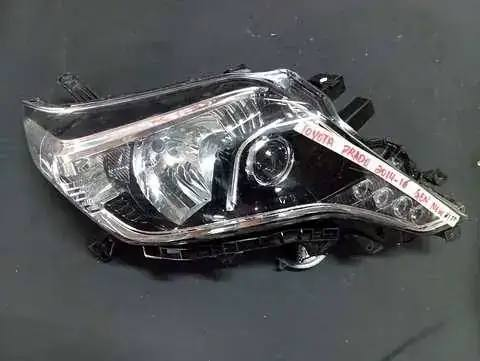
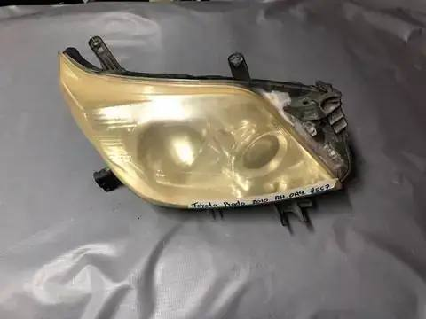
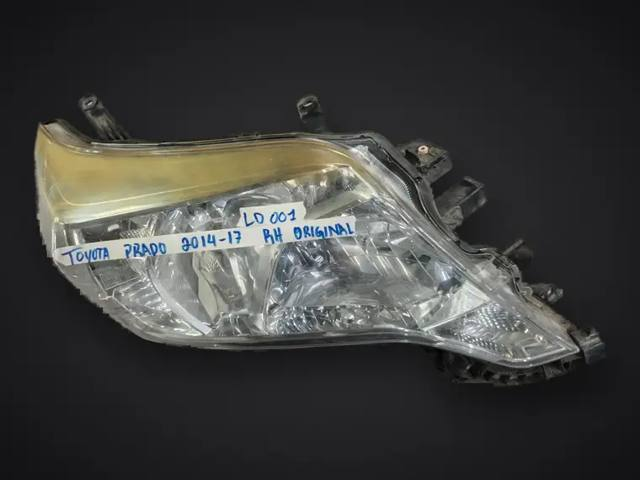
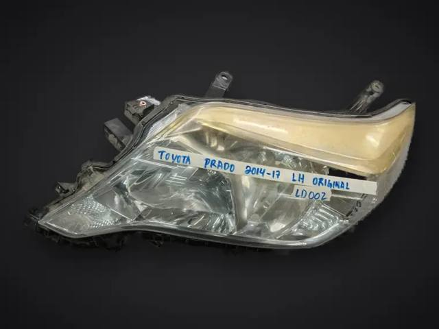
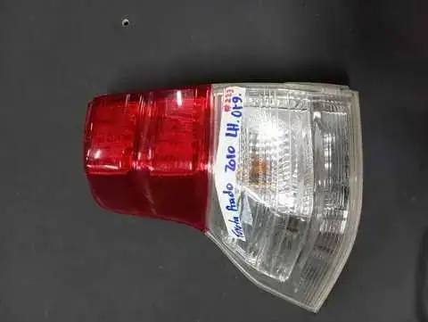
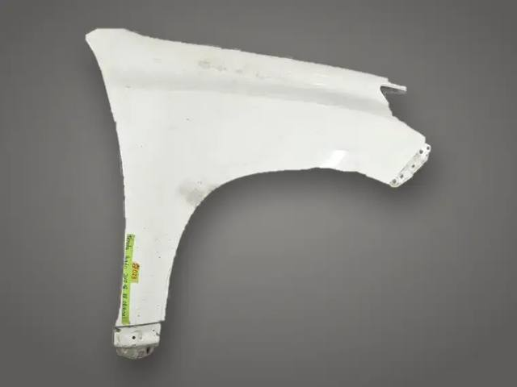
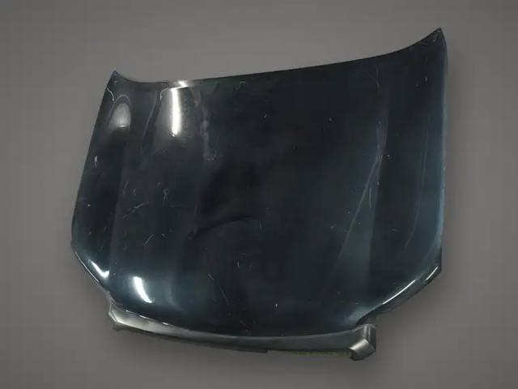

Piezas de carrocería para Toyota Prado
27 piezas disponibles hoy para Toyota Prado, cada una con su foto y su código: faros y lámparas delanteras (7), lámparas traseras (5), guardafangos (5), defensas delanteras (4). Dinos el año de tu carro y te confirmamos si le sirve.
- Garantía de 3 días
- Foto real de cada pieza
- Efectivo, Yappy o ACH
- Lunes a sábado, 8:00 a. m. a 5:00 p. m.
Faros y lámparas delanteras para Toyota Prado 7

126Prado2014-17 · genérico 129Prado2014-17 · lado derecho · genérico
129Prado2014-17 · lado derecho · genérico 146Prado2014-17 · lado izquierdo · original
146Prado2014-17 · lado izquierdo · original 556Prado2010-13 · lado izquierdo · original
556Prado2010-13 · lado izquierdo · original
557Prado2010-13 · lado derecho · original
LD001Prado2014-2017 · lado derecho · original
LD002Prado2014-2017 · lado izquierdo · originalLámparas traseras para Toyota Prado 5

223Prado2010-13 · lado izquierdo · original 224Prado2010-13 · lado derecho · original
224Prado2010-13 · lado derecho · original 558Prado2010-13 · lado derecho · original
558Prado2010-13 · lado derecho · original 559Prado2010-13 · lado izquierdo · original
559Prado2010-13 · lado izquierdo · original 560Prado2010-13 · lado izquierdo · original
560Prado2010-13 · lado izquierdo · originalGuardafangos para Toyota Prado 5

GF023Prado2009-2015 · lado derecho · original GF024Prado2009-2015 · lado izquierdo · original
GF024Prado2009-2015 · lado izquierdo · original GF036Prado2009-2015 · lado izquierdo · original
GF036Prado2009-2015 · lado izquierdo · original GF038Prado2009-2015 · lado izquierdo · original
GF038Prado2009-2015 · lado izquierdo · original GF040Prado2009-2015 · lado derecho · original
GF040Prado2009-2015 · lado derecho · originalDefensas delanteras para Toyota Prado 4
 759Prado2010-13 · original
759Prado2010-13 · original 760Prado2018-23 · original
760Prado2018-23 · original 761Prado2018-23 · genérico
761Prado2018-23 · genérico 762Prado2010-15 · original
762Prado2010-15 · originalCapós para Toyota Prado 4
 TM013Prado2018-23 · original
TM013Prado2018-23 · original
TM014Prado2018-23 · original TM041Prado2018-23 · original
TM041Prado2018-23 · original TM055Prado2018-23 · original
TM055Prado2018-23 · original 582Prado 2014-17
582Prado 2014-17 875Prado
875Prado